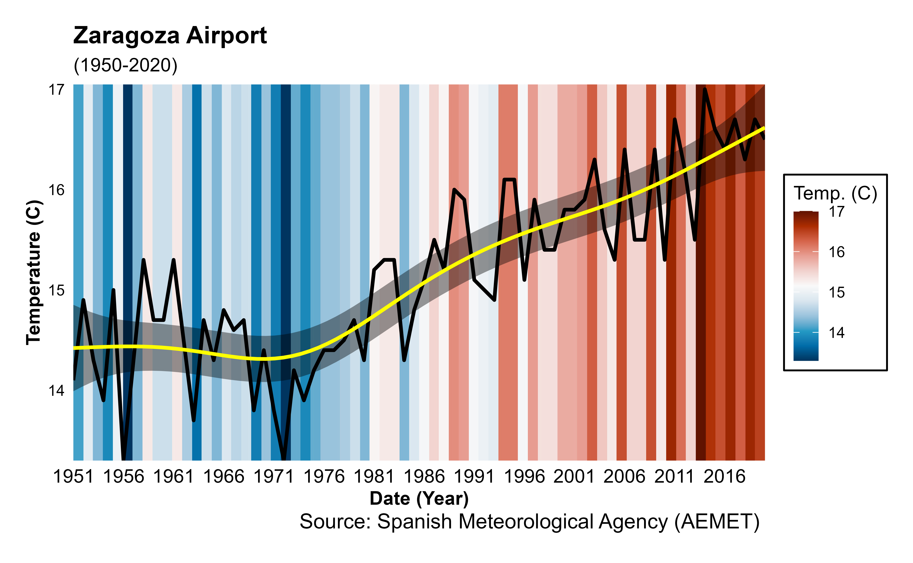

Plot different "climate stripes" or "warming stripes" using ggplot2. This graphics are visual representations of the change in temperature as measured in each location over the past 70-100+ years. Each stripe represents the temperature in that station averaged over a year.
Arguments
- data
a data.frame with date(
year) and temperature(temp) variables.- plot_type
plot type (with labels, background, stripes with line trend and animation). Accepted values are
"background","stripes","trend"or"animation".- plot_title
character string to be used for the graph title.
- n_temp
Numeric value as the number of colors of the palette. (default
11).- col_pal
Character string indicating the name of the
hcl.pals()color palette to be used for plotting.- ...
further arguments passed to
ggplot2::theme().
Value
A ggplot2 object
Note
"Warming stripes" charts are a conceptual idea of Professor Ed Hawkins (University of Reading) and are specifically designed to be as simple as possible and alert about risks of climate change. For more details see ShowYourStripes.
API Key
You need to set your API Key globally using aemet_api_key().
See also
climatestripes_station(), ggplot2::theme() for more possible
arguments to pass to ggstripes.
Other aemet_plots:
climatestripes_station(),
climatogram_normal(),
climatogram_period(),
ggclimat_walter_lieth(),
ggwindrose(),
windrose_days(),
windrose_period()
Other stripes:
climaemet_9434_temp,
climatestripes_station()
Examples
# \donttest{
library(ggplot2)
data <- climaemet::climaemet_9434_temp
ggstripes(data, plot_title = "Zaragoza Airport") +
labs(subtitle = "(1950-2020)")
#> ℹ Climate stripes plotting ...
#> Warning: Removed 2 rows containing missing values or values outside the scale range
#> (`geom_tile()`).
ggstripes(data, plot_title = "Zaragoza Airport", plot_type = "trend") +
labs(subtitle = "(1950-2020)")
#> ℹ Climate stripes with temperature line trend plotting ...
#> Warning: Removed 2 rows containing missing values or values outside the scale range
#> (`geom_tile()`).

# }